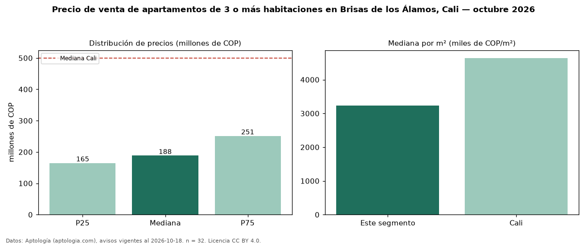

Precio de venta de apartamentos de 3 o más habitaciones en Brisas de los Álamos, Cali — octubre 2026
Con 32 avisos vigentes, el precio mediano de apartamentos de 3 o más habitaciones en venta en Brisas de los Álamos, Cali es COP 188 millones. Frente a la mediana de Cali para apartamentos de 3 o más habitaciones (COP 500 millones), queda 62 % por debajo. Por metro cuadrado, la mediana es COP 3,24 millones/m² (n = 32 avisos con área), 30 % por debajo de Cali (COP 4,64 millones/m²). Son 52 % de los 62 avisos de apartamentos en venta de la zona, cuya mediana general es COP 230 millones (−18 %). El área mediana anunciada es 57 m². La administración mediana declarada es COP 239.000 al mes (n = 22). El estrato más frecuente es 3 (78 % de los avisos con estrato). La mitad central de los avisos va de COP 165 millones a COP 251 millones (razón 1,5), una dispersión moderada. Datos: Aptología (aptologia.com), CC BY 4.0 — https://www.aptologia.com/venta/cali/brisas-de-los-alamos. Archivos: PDF, CSV con las cifras y gráfica PNG.

| Avisos únicos | 32 |
|---|---|
| Percentil 25 | COP 165.000.000 |
| Mediana | COP 188.500.000 |
| Percentil 75 | COP 251.250.000 |
| Mediana por m² | COP 3.236.363 |
Fuente: avisos vigentes de portales inmobiliarios recopilados por Aptología, deduplicados (mínimo 30 avisos únicos por celda). Precios pedidos, no cerrados. Fecha: 2026-10-18.